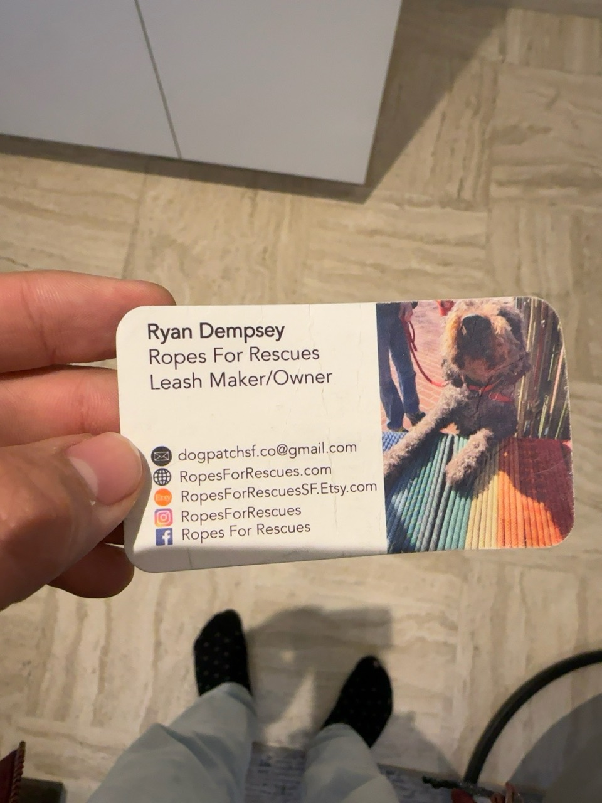
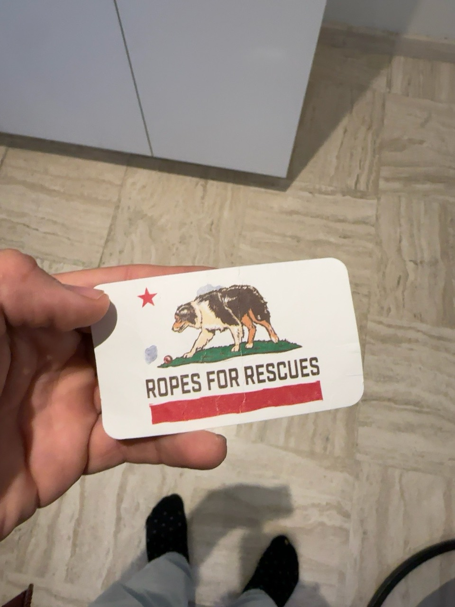

A rope retires.
Used climbing ropes get a new purpose instead of heading to landfill.
San Francisco · a small business with a rescue mission
Ryan Dempsey · Ropes For Rescues. Retired climbing ropes become dog leashes, and some of those leashes go straight to animal rescues.
I met Ryan at his stand in San Francisco. I like the cause: give something used a second life, make something useful, and help dogs along the way.

Ropes For Rescues says it donates 10% of the leashes it makes to an animal rescue chosen by the rope donor. The donation is in leashes, rather than a stated percentage of sales revenue.
Read the mission on Ryan’s site →a second life, with a story attached
Used climbing ropes get a new purpose instead of heading to landfill.
Each leash carries the story of the climber who donated its rope and where it was used.
The project donates leashes to animal rescues. You can see the organisations it supports on its own community page.
This is a personal recommendation from Gabe. A small maker, a useful product, and a cause I’m happy to give some space to on Corvus.
Donation details come from Ropes For Rescues’ official mission page, checked 21 November 2026.
